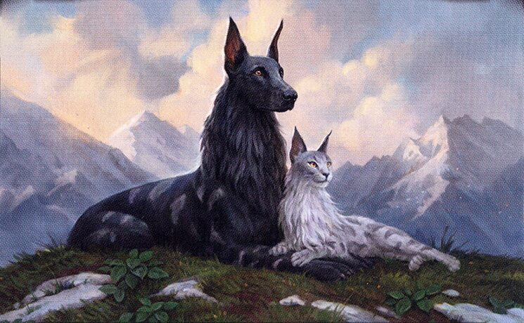

Unter dem Schnitt
Das Deck gewinnt 19 % seiner Partien – der Schnitt am Vierertisch liegt bei 25 %.
- Stufe · Elo
- C 1382 Platz 51 von 64 in der Rangliste bis 100 €
- Siegquote
- 19 % 93 Siege in 496 Partien, mit 90 % Sicherheit zwischen 16 und 22 %
- Platzierungen
- 118 %7×
- 230 %12×
- 325 %10×
- 428 %11×
Dort ein neues Deck anlegen und die Liste beim Import einfügen.
- Preis
- 99,49 €von 100,00 €
- Partien
- 511in 51 Turnieren, 15 am Zeitlimit nicht gewertet
- Karten
- 10036 Länder, davon 14 Standard
- Game Changer
- 1höchstens 3 erlaubt
- Kombos
- 2komplett im Deck
- Regelcheck
- Bestanden100 Karten, Farben, Bannliste
Höchstens 100 € inklusive Commander. Steigen die Preise darüber, wird die Kaufliste automatisch neu gebaut.
Die Kaufliste wurde am 16.11.2026 mit aktuellen Preisen neu gebaut: Die getestete Fassung kostete inzwischen 100,06 € und lag damit über 100,00 €. Siegquote und Platzierung stammen von der getesteten Fassung.
Stärken und Schwächen
Aus 486 ausgewerteten Partien in 50 Turnieren (mit den Listen, die im Turnier gespielt wurden). Partien am Zeitlimit zählen wie in der Rangliste nicht. Werte in Klammern: Schnitt aller Decks derselben Preisklasse. Die genauen Zahlen siehst du, wenn du mit der Maus auf einen Punkt zeigst oder ihn antippst.
Spielweise: gewinnt über den Kampf – 100 % des Schadens an Gegnern ist Kampfschaden · So gewinnt es: 32 % der Siege durch Überleben – die Gegner schalteten sich gegenseitig aus (Schnitt aller Decks: 31 %)
Stärken
- Zäh sicherhält auch in Niederlagen lange durch, im Schnitt bis zum 12. eigenen Zug (Schnitt aller Decks: 10.) · 395 Niederlagen
Schwächen
- Braucht lange zum Sieg sicherSiege im Schnitt erst im 14. eigenen Zug (Schnitt aller Decks: 12.) · 91 Siege
- Angriffe werden oft geblockt sicher24 % der Angreifer geblockt (Schnitt aller Decks: 19 %) · 3369 Angreifer in 447 Partien
- Wenig Druck sichernur Ø 26 Schaden an Gegnern je Partie (Schnitt aller Decks: 31) · 486 Partien
- Schaltet selten Gegner aus sicherim Schnitt 0,48 je Partie (Schnitt aller Decks: 0,63) · 486 Partien
Gegen wen es gewinnt
Siegquote an Tischen, an denen dieser Commander mitspielte – nur Gegner aus der aktuellen Rangliste mit mindestens 20 gemeinsamen Partien. Am Vierertisch liegt der Schnitt bei 25 %.
Gewinnt oft gegen
 42 %von 24
42 %von 24 37 %von 27
37 %von 27 35 %von 20
35 %von 20
Tut sich schwer gegen
 5 %von 20
5 %von 20 7 %von 29
7 %von 29
7 %von 27
Spielstil
VerzauberungenKreaturen-Druck
Anzahl Karten je Aufgabe – Ø ist der Durchschnitt aller getesteten Decks (Strich im Balken).
Mit einem anderen Commander vergleichen
Commander (1)
- Tidus, Yuna's Guardian4,80 €
Kreaturen (35)
- Arwen, Mortal Queen Schutz6,91 €
- Walking BallistaKombo6,89 €
- Birds of Paradise B Ramp3,00 €
- Kami of Whispered Hopes RampKombo2,97 €
- Kutzil, Malamet Exemplar Kartenziehen2,21 €
- Tekuthal, Inquiry Dominus2,16 €
- Evolution Sage2,06 €
- Yuna, Grand Summoner Ramp1,65 €
- Summon: Yojimbo Removal1,57 €
- Gyre Sage Ramp1,47 €
- Incubation Druid Ramp1,36 €
- Luminous Broodmoth1,09 €
- Tromell, Seymour's Butler0,51 €
- Scholar of New Horizons0,48 €
- O'aka, Traveling Merchant Kartenziehen0,45 €
- Lulu, Stern Guardian0,43 €
- Summon: Ixion Removal0,43 €
- Rikku, Resourceful Guardian0,37 €
- Chasm Skulker0,35 €
- Maester Seymour0,32 €
- Fathom Mage Kartenziehen0,30 €
- Forgotten Ancient0,30 €
- Summon: Valefor0,30 €
- Sin, Unending Cataclysm0,28 €
- Wakka, Devoted Guardian Removal0,27 €
- Auron, Venerated Guardian Removal0,26 €
- Chocobo Knights0,26 €
- Shelinda, Yevon Acolyte0,25 €
- Summon: Magus Sisters0,25 €
- Evolution WitnessKombo0,23 €
- Gatta and LuzzuKombo0,20 €
- Kimahri, Valiant Guardian0,16 €
- Grateful Apparition0,12 €
- Thrummingbird0,12 €
- Duskshell Crawler0,09 €
Spontanzauber (7)
- Ripples of Potential Schutz4,60 €
- An Offer You Can't Refuse B Removal3,29 €
- Path to Exile B Removal1,00 €
- Swords to Plowshares B Removal0,97 €
- Protection Magic0,34 €
- Inspiring Call KartenziehenKI schwach0,29 €
- Destroy Evil Removal0,15 €
Hexereien (7)
- Three Visits B Ramp4,87 €
- Farewell S Board WipeGame Changer4,10 €
- Damning Verdict Board Wipe3,69 €
- Farseek B RampKI schwach0,62 €
- Promise of Loyalty Board Wipe0,21 €
- Yuna's Decision Kartenziehen0,19 €
- Collective Effort Removal0,15 €
Artefakte (5)
- Ozolith, the Shattered Spire KartenziehenKombo4,54 €
- Sol Ring B Ramp0,78 €
- Arcane Signet B Ramp0,37 €
- Blitzball Stadium Kartenziehen0,20 €
- Everflowing Chalice Ramp0,19 €
Verzauberungen (9)
- Innkeeper's TalentKombo8,49 €
- Sphere Grid7,00 €
- Hardened ScalesKomboKI schwach1,84 €
- Inexorable TideKombo1,12 €
- Resourceful Defense0,24 €
- Summoner's Sending Removal0,23 €
- Fight Rigging0,21 €
- Bred for the Hunt Kartenziehen0,17 €
- Together Forever0,10 €
Länder (36)
- Brushland0,82 €
- Sunpetal Grove0,35 €
- Hinterland Harbor0,32 €
- Flooded Grove0,28 €
- Seaside Citadel0,23 €
- Canopy Vista0,20 €
- Overflowing Basin0,20 €
- Exotic Orchard0,19 €
- Forge of Heroes0,18 €
- Port Town0,18 €
- Vineglimmer Snarl0,18 €
- Glacial Fortress0,17 €
- Command Tower0,16 €
- Sungrass Prairie0,16 €
- Fortified Village0,15 €
- Prairie Stream0,15 €
- Temple of Plenty0,14 €
- Nesting GroundsKI kann nicht0,13 €
- Temple of Mystery0,13 €
- Path of Ancestry0,12 €
- Skycloud Expanse0,12 €
- Temple of Enlightenment0,11 €
- 5× Forest
- 4× Island
- 5× Plains
Upgrade auf bis 200 €
Du hast dieses Deck bis 100 €? Das getestete Deck bis 200 € spielt diese Karten anders – oben die, mit denen es am häufigsten gewinnt.
7 Karten anders · +99,90 € · Platz 51 → Platz 50
- Herald of Secret Streams +4 % Siege, wenn gespielt7,52 €
- Branching Evolution6,52 €
- Dreamtide Whale3,61 €
- The Earth Crystal8,04 €
- Esper Sentinel39,61 €
- Ouroboroid34,12 €
- Freed from the Real4,16 €
Dafür raus (7)
Chasm Skulker, Evolution Sage, Evolution Witness, Scholar of New Horizons, Summon: Magus Sisters, Thrummingbird, Yuna's Decision
Starthand ziehen
Sieben zufällige Karten aus diesem Deck – so siehst du, wie sich der Start anfühlt. Der Commander liegt wie im Spiel nicht im Stapel.
Kombos im Deck (2)
Laut Commander Spellbook mit dieser Kartenliste möglich. Was eine Kombo genau braucht, steht dort. Ob eine Kombo in Partien wirklich zusammenkam, steht im Reiter „Partien“.
- Gatta and Luzzu + Walking Ballista + … → ∞ Schaden, ∞ +1/+1-Marken auf einer Kreatur
4 Fassungen, dazu passt jeweils eine von: Hardened Scales · Kami of Whispered Hopes · Innkeeper's Talent · Ozolith, the Shattered Spire - Inexorable Tide + Evolution Witness → ∞ LTB-Auslöser von Kreaturen, ∞ ETB-Auslöser von Kreaturen, ∞ Sterbe-Auslöser
Commander Spellbook führt 5 Einträge, weil jede Fassung einzeln zählt (zum Beispiel mit einem anderen Opfer-Ziel). Hier zählt jede Kombo einmal.
Alle 5 Einträge anzeigen
- Gatta and Luzzu + Hardened Scales + Walking Ballista → ∞ Schaden, ∞ +1/+1-Marken auf einer Kreatur
- Gatta and Luzzu + Kami of Whispered Hopes + Walking Ballista → ∞ Schaden, ∞ +1/+1-Marken auf einer Kreatur
- Gatta and Luzzu + Walking Ballista + Innkeeper's Talent → ∞ Schaden, ∞ +1/+1-Marken auf einer Kreatur
- Gatta and Luzzu + Walking Ballista + Ozolith, the Shattered Spire → ∞ Schaden, ∞ +1/+1-Marken auf einer Kreatur
- Inexorable Tide + Evolution Witness → ∞ LTB-Auslöser von Kreaturen, ∞ ETB-Auslöser von Kreaturen, ∞ Sterbe-Auslöser
Die Partien in Zahlen
- Commander gewirkt
- 100 %der Partien, in 34 % bis zum 4. Zug
- Schaden je Partie
- 26Schnitt: 31
- Siege im Schnitt
- Zug 14,2eigener Zug, Schnitt: 12,2
- Als Erstes ausgeschieden
- 24 %119 von 486 Partien, Schnitt: 25 %
- Zu wenig Länder
- 10 %der Partien, davon 7 gewonnen, Schnitt: 9 %
- Mulligans
- 6 %28 in 486 Partien, Schnitt: 6 %
Karten mit messbarem Einfluss
Ein Zusammenhang, kein Beweis: Diese Karten kamen in Siegen deutlich öfter ins Spiel.
- Innkeeper's Talent – gewonnen in 44 % der Partien, in denen sie gewirkt wurde (34), sonst 17 %
- Maester Seymour – gewonnen in 33 % der Partien, in denen sie gewirkt wurde (87), sonst 16 %
- Summoner's Sending – gewonnen in 32 % der Partien, in denen sie gewirkt wurde (90), sonst 16 %
Was die Partien zeigen
Aus 486 ausgewerteten Partien in 50 Turnieren (mit den Listen, die im Turnier gespielt wurden). Partien am Zeitlimit zählen wie in der Rangliste nicht. Werte in Klammern: Schnitt aller Decks derselben Preisklasse. „sicher“: steht so im Spielprotokoll. „Hinweis“: kommt immer wieder vor, ist aber kein Beweis.
Schaden pro Partie alle Partien
Schaden an Gegnern pro Partie, gerechnet über alle 486 Partien – was die Karte insgesamt beiträgt
- Tidus, Yuna's Guardian Ø 4,5traf in 220 von 486 Partien
- Spirit Token Ø 1,4traf in 43 von 486 Partien
- Kimahri, Valiant Guardian Ø 1,4traf in 45 von 486 Partien
Schaden bei Einsatz wenn sie trifft
Gesamtschaden ÷ Partien, in denen die Karte Schaden gemacht hat – ihre Stärke im Einsatz
- Auron, Venerated Guardian Ø 16,8traf in 29 von 486 Partien
- Chasm Skulker Ø 16,4traf in 23 von 486 Partien
- Spirit Token Ø 16,2traf in 43 von 486 Partien
Top-Finisher schaltet Gegner aus
Karten, die am häufigsten einen gegnerischen Commander aus der Partie genommen haben
- Tidus, Yuna's Guardian 27×486 Partien im Deck
- Spirit Token 23×486 Partien im Deck
- Luminous Broodmoth 15×486 Partien im Deck
Beste Interaktion räumt auf
Gegnerkarten, die beim Auflösen dieser Karte zerstört, verbannt, zurückgeschickt oder neutralisiert wurden (ohne Spielsteine)
- Farewell 597×Ø 1,2 pro Partie · 486 Partien im Deck
- Damning Verdict 404×Ø 0,8 pro Partie · 486 Partien im Deck
- Promise of Loyalty 251×Ø 0,5 pro Partie · 467 Partien im Deck
Größte Hindernisse blockt am meisten
Gegnerische Karten, die die Angreifer dieses Decks am häufigsten geblockt haben – insgesamt 24 % der 3369 Angreifer geblockt, davon 11 % durch Flieger oder Reichweite
- Zombie Token 16×blockte in 5 Partien
- Squirrel Token 15×blockte in 5 Partien
- Human Soldier Token 11×blockte in 8 Partien
Selten gewirkt Kandidaten zum Tauschen
Karten dieser Liste, die in ihren Partien am seltensten gewirkt wurden – oft zu teuer oder zu langsam (Länder ausgenommen)
- Sin, Unending Cataclysm 0 %gewirkt in 0 von 476 Partien
- Gatta and Luzzu 2 %gewirkt in 11 von 486 Partien
- Fight Rigging 14 %gewirkt in 65 von 476 Partien
Siege nach Zug Tempo
In welchem eigenen Zug die 91 Siege kamen
- bis Zug 70 %
- Zug 8–93 %
- Zug 10–1120 %
- Zug 12–1326 %
- ab Zug 1451 %
Kombos im Spiel sicher Gatta and Luzzu + Hardened Scales + Walking Ballista: alle Teile gewirkt in 0 Partien, davon 0 gewonnen · Gatta and Luzzu + Kami of Whispered Hopes + Walking Ballista: alle Teile gewirkt in 0 Partien, davon 0 gewonnen · Gatta and Luzzu + Walking Ballista + Innkeeper's Talent: alle Teile gewirkt in 0 Partien, davon 0 gewonnen · Gatta and Luzzu + Walking Ballista + Ozolith, the Shattered Spire: alle Teile gewirkt in 0 Partien, davon 0 gewonnen
Elo-Verlauf
Elo nach jedem Turnier, älteste links. Gestrichelt: Stufengrenzen S, A, B, C.
Jetzt 1382, am höchsten 1494 (07.11.), am niedrigsten 1322 – aus 51 Turnieren.
Letzte Partien
Platz in jeder Partie zu viert, älteste links: Gold = Sieg, Silber = 2, Bronze = 3, rot = 4, Ring = Remis.
4133323313114132233422242242221444443124In den letzten 40 Partien 7× Sieg, 12× Platz 2, 10× Platz 3 und 11× Platz 4.
Manakurve ohne Länder
Durchschnitt 2,83
Aufgaben im Deck
Anzahl / Richtwert aus dem EDHREC-Durchschnittsdeck (der Strich), rot heißt deutlich darunter. Strategie: die übrigen Karten ohne eine dieser Aufgaben, etwa die Kreaturen und Effekte, um die sich das Deck dreht. Zusammen 63 Karten ohne Länder.
Kartentypen
- Kreaturen35 %35
- Spontanzauber7 %7
- Hexereien7 %7
- Artefakte5 %5
- Verzauberungen9 %9
- Länder36 %36
Teuerste Karten
Was das Programm gelernt hat
In jedem Turnier testet das Deck eine Karte. Ein Urteil gibt es erst ab 40 Partien mit und ohne die Karte. Weil das Deck jedes Turnier mit aktuellen Preisen und Daten neu gebaut wird, können getestete Karten später wieder herausfallen.
- kein klarer Unterschied Evolution Sage statt Thrummingbird · Siegquote 18 % mit, 19 % ohne (119 / 377 Partien)
4 weitere getestete Karten sammeln noch Partien.
Kaufliste für Cardmarket
Liste kopieren, auf Cardmarket unter „Wants“ eine neue Liste anlegen und einfügen.
Zusammen 99,49 € Cardmarket-Durchschnitt vom 26.11.2026
Cardmarket Wants öffnenPreise ohne Versand. Einzelne Karten können bei Cardmarket inzwischen teurer oder günstiger sein.
Gespielt von der Forge-KI, zu viert. Ein durchschnittliches Deck gewinnt 25 %. Wie wird getestet?